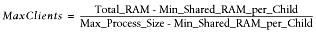
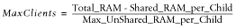
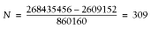
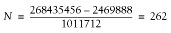
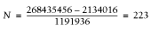
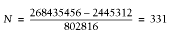

|  |
| |
In this chapter we will talk about two issues that play an important role in optimizing server performance: sharing memory and forking.
Firstly, mod_perl Apache processes can become quite large, and it is therefore very important to make sure that the memory used by the Apache processes is shared between them as much as possible.
Secondly, if you need the Apache processes to fork new processes, it is important to perform the fork( ) calls in the proper way.
The sharing of memory is a very important factor. If your OS supports it (and most sane systems do), a lot of memory can be saved by sharing it between child processes. This is possible only when code is preloaded at server startup. However, during a child process's life, its memory pages tend to become unshared. Here is why.
There is no way to make Perl allocate memory so that (dynamic) variables land on different memory pages from constants or the rest of your code (which is really just data to the Perl interpreter), so the copy-on-write effect (explained in a moment) will hit almost at random.
If many modules are preloaded, you can trade off the memory that stays shared against the time for an occasional fork of a new Apache child by tuning the MaxRequestsPerChild Apache directive. Each time a child reaches this upper limit and dies, it will release its unshared pages. The new child will have to be forked, but it will share its fresh pages until it writes on them (when some variable gets modified).
The ideal is a point where processes usually restart before too much memory becomes unshared. You should take some measurements, to see if it makes a real difference and to find the range of reasonable values. If you have success with this tuning, bear in mind that the value of MaxRequestsPerChild will probably be specific to your situation and may change with changing circumstances.
It is very important to understand that the goal is not necessarily to have the highest MaxRequestsPerChild that you can. Having a child serve 300 requests on precompiled code is already a huge overall speedup. If this value also provides a substantial memory saving, that benefit may outweigh using a higher MaxRequestsPerChild value.
A newly forked child inherits the Perl interpreter from its parent. If most of the Perl code is preloaded at server startup, then most of this preloaded code is inherited from the parent process too. Because of this, less RAM has to be written to create the process, so it is ready to serve requests very quickly.
During the life of the child, its memory pages (which aren't really its own to start with—it uses the parent's pages) gradually get dirty—variables that were originally inherited and shared are updated or modified—and copy-on-write happens. This reduces the number of shared memory pages, thus increasing the memory requirement. Killing the child and spawning a new one allows the new child to use the pristine shared memory of the parent process.
The recommendation is that MaxRequestsPerChildshould not be too large, or you will lose some of the benefit of sharing memory. With memory sharing in place, you can run many more servers than without it. In Chapter 11 we will devise a formula to calculate the optimum value for the MaxClients directive when sharing is taking place.
As we mentioned in Chapter 9, you can find the size of the shared memory by using the ps(1) or top(1) utilities, or by using the GTop module:
use GTop ( );
print "Shared memory of the current process: ",
GTop->new->proc_mem($$)->share, "\n";
print "Total shared memory: ",
GTop->new->mem->share, "\n";We have shown how to measure the size of the process's shared memory, but we still want to know what the real memory usage is. Obviously this cannot be calculated simply by adding up the memory size of each process, because that wouldn't account for the shared memory.
On the other hand, we cannot just subtract the shared memory size from the total size to get the real memory-usage numbers, because in reality each process has a different history of processed requests, which makes different memory pages dirty; therefore, different processes have different memory pages shared with the parent process.
So how do we measure the real memory size used by all running web-server processes? It is a difficult task—probably too difficult to make it worthwhile to find the exact number—but we have found a way to get a fair approximation.
This is the calculation technique that we have devised:
Calculate all the unshared memory, by summing up the difference between shared and system memory of each process. To calculate a difference for a single process, use:
use GTop; my $proc_mem = GTop->new->proc_mem($$); my $diff = $proc_mem->size - $proc_mem->share; print "Difference is $diff bytes\n";
Add the system memory use of the parent process, which already includes the shared memory of all other processes.
Figure 10-1 helps to visualize this.
The Apache::VMonitor module uses this technique to display real memory usage. In fact, it makes no separation between the parent and child processes. They are all counted indifferently using the following code:
use GTop ( );
my $gtop = GTop->new;
my ($parent_pid, @child_pids) = some_code( );
# add the parent proc memory size
my $total_real = $gtop->proc_mem($parent_pid)->size;
# add the unshared memory sizes
for my $pid (@child_pids) {
my $proc_mem = $gtop->proc_mem($pid);
$total_real += $proc_mem->size - $proc_mem->share;
}Now $total_real contains approximately the amount of memory really used.
This method has been verified in the following way. We calculate the real memory used using the technique described above. We then look at the system memory report for the total memory usage. We then stop Apache and look at the total memory usage for a second time. We check that the system memory usage report indicates that the total memory used by the whole system has gone down by about the same number that we've calculated.
Note that some OSes do smart memory-page caching, so you may not see the memory usage decrease immediately when you stop the server, even though it is actually happening. Also, if your system is swapping, it's possible that your swap memory was used by the server as well as the real memory. Therefore, to get the verification right you should use a tool that reports real memory usage, cached memory, and swap memory. For example, on Linux you can use the free command. Run this command before and after stopping the server, then compare the numbers reported in the column called free.
Based on this logic we can devise a formula for calculating the maximum possible number of child processes, taking into account the shared memory. From now on, instead of adding the memory size of the parent process, we are going to add the maximum shared size of the child processes, and the result will be approximately the same. We do that approximation because the size of the parent process is usually unknown during the calculation.
Therefore, the formula to calculate the maximum number of child processes with minimum shared memory size of Min_Shared_RAM_per_Child MB that can run simultaneously on a machine that has a total RAM of Total_RAM MB available for the web server, and knowing the maximum process size, is:
which can also be rewritten as:
since the denominator is really the maximum possible amount of a child process's unshared memory.
In Chapter 14 we will see how we can enforce the values used in calculation during runtime.
How do you find out if the code you write is shared between processes or not? The code should remain shared, except when it is on a memory page used by variables that change. As you know, a variable becomes unshared when a process modifies its value, and so does the memory page it resides on, because the memory is shared in memory-page units.
Sometimes you have variables that use a lot of memory, and you consider their usage read-only and expect them to be shared between processes. However, certain operations that seemingly don't modify the variable values do modify things internally, causing the memory to become unshared.
Imagine that you have a 10 MB in-memory database that resides in a single variable, and you perform various operations on it and want to make sure that the variable is still shared. For example, if you do some regular expression (regex)-matching processing on this variable and you want to use the pos( ) function, will it make the variable unshared or not? If you access the variable once as a numerical value and once as a string value, will the variable become unshared?
The Apache::Peek module comes to the rescue.
Let's write a module called Book::MyShared, shown in Example 10-1, which we will preload at server startup so that all the variables of this module are initially shared by all children.
package Book::MyShared;
use Apache::Peek;
my $readonly = "Chris";
sub match { $readonly =~ /\w/g; }
sub print_pos { print "pos: ",pos($readonly),"\n";}
sub dump { Dump($readonly); }
1;This module declares the package Book::MyShared, loads the Apache::Peek module and defines the lexically scoped $readonly variable. In most instances, the $readonly variable will be very large (perhaps a huge hash data structure), but here we will use a small variable to simplify this example.
The module also defines three subroutines: match( ), which does simple character matching; print_pos( ), which prints the current position of the matching engine inside the string that was last matched; and finally dump( ), which calls the Apache::Peek module's Dump( ) function to dump a raw Perl representation of the $readonly variable.
Now we write a script (Example 10-2) that prints the process ID (PID) and calls all three functions. The goal is to check whether pos( ) makes the variable dirty and therefore unshared.
use Book::MyShared; print "Content-type: text/plain\n\n"; print "PID: $$\n"; Book::MyShared::match( ); Book::MyShared::print_pos( ); Book::MyShared::dump( );
Before you restart the server, in httpd.conf, set:
MaxClients 2
for easier tracking. You need at least two servers to compare the printouts of the test program. Having more than two can make the comparison process harder.
Now open two browser windows and issue requests for this script in each window, so that you get different PIDs reported in the two windows and so that each process has processed a different number of requests for the share_test.pl script.
In the first window you will see something like this:
PID: 27040
pos: 1
SV = PVMG(0x853db20) at 0x8250e8c
REFCNT = 3
FLAGS = (PADBUSY,PADMY,SMG,POK,pPOK)
IV = 0
NV = 0
PV = 0x8271af0 "Chris"\0
CUR = 5
LEN = 6
MAGIC = 0x853dd80
MG_VIRTUAL = &vtbl_mglob
MG_TYPE = 'g'
MG_LEN = 1And in the second window:
PID: 27041
pos: 2
SV = PVMG(0x853db20) at 0x8250e8c
REFCNT = 3
FLAGS = (PADBUSY,PADMY,SMG,POK,pPOK)
IV = 0
NV = 0
PV = 0x8271af0 "Chris"\0
CUR = 5
LEN = 6
MAGIC = 0x853dd80
MG_VIRTUAL = &vtbl_mglob
MG_TYPE = 'g'
MG_LEN = 2All the addresses of the supposedly large data structure are the same (0x8250e8c and 0x8271af0)—therefore, the variable data structure is almost completely shared. The only difference is in the SV.MAGIC.MG_LEN record, which is not shared. This record is used to track where the last m//g match left off for the given variable, (e.g., by pos( )) and therefore it cannot be shared. See the perlre manpage for more information.
Given that the $readonly variable is a big one, its value is still shared between the processes, while part of the variable data structure is nonshared. The nonshared part is almost insignificant because it takes up very little memory space.
If you need to compare more than one variable, doing it by hand can be quite time consuming and error prone. Therefore, it's better to change the test script to dump the Perl datatypes into files (e.g., /tmp/dump.$$, where $$ is the PID of the process). Then you can use the diff(1) utility to see whether there is some difference.
Changing the dump( ) function to write the information to a file will do the job. Notice that we use Devel::Peek and not Apache::Peek, so we can easily reroute the STDERRstream into a file. In our example, when Devel::Peek tries to print to STDERR, it actually prints to our file. When we are done, we make sure to restore the original STDERR file handle.
The resulting code is shown in Example 10-3.
package Book::MyShared2;
use Devel::Peek;
my $readonly = "Chris";
sub match { $readonly =~ /\w/g; }
sub print_pos { print "pos: ",pos($readonly),"\n";}
sub dump {
my $dump_file = "/tmp/dump.$$";
print "Dumping the data into $dump_file\n";
open OLDERR, ">&STDERR";
open STDERR, ">$dump_file" or die "Can't open $dump_file: $!";
Dump($readonly);
close STDERR ;
open STDERR, ">&OLDERR";
}
1;Now we modify our script to use the modified module, as shown in Example 10-4.
use Book::MyShared2; print "Content-type: text/plain\n\n"; print "PID: $$\n"; Book::MyShared2::match( ); Book::MyShared2::print_pos( ); Book::MyShared2::dump( );
Now we can run the script as before (with MaxClients 2). Two dump files will be created in the directory /tmp. In our test these were created as /tmp/dump.1224 and /tmp/dump.1225. When we run diff(1):
panic% diff -u /tmp/dump.1224 /tmp/dump.1225 12c12 - MG_LEN = 1 + MG_LEN = 2
we see that the two padlists (of the variable $readonly) are different, as we observed before, when we did a manual comparison.
If we think about these results again, we come to the conclusion that there is no need for two processes to find out whether the variable gets modified (and therefore unshared). It's enough just to check the data structure twice, before the script was executed and again afterward. We can modify the Book::MyShared2 module to dump the padlists into a different file after each invocation and then to run diff(1) on the two files.
Suppose you have some lexically scoped variables (i.e., variables declared with my( )) in an Apache::Registryscript. If you want to watch whether they get changed between invocations inside one particular process, you can use the Apache::RegistryLexInfo module. It does exactly that: it takes a snapshot of the padlist before and after the code execution and shows the difference between the two. This particular module was written to work with Apache::Registry scripts, so it won't work for loaded modules. Use the technique we described above for any type of variables in modules and scripts.
Another way of ensuring that a scalar is read-only and therefore shareable is to use either the constant pragma or the readonly pragma, as shown in Example 10-5. But then you won't be able to make calls that alter the variable even a little, such as in the example that we just showed, because it will be a true constant variable and you will get a compile-time error if you try this.
package Book::Constant;
use constant readonly => "Chris";
sub match { readonly =~ /\w/g; }
sub print_pos { print "pos: ",pos(readonly),"\n";}
1;
panic% perl -c Book/Constant.pm
Can't modify constant item in match position at Book/Constant.pm
line 5, near "readonly)"
Book/Constant.pm had compilation errors.However, the code shown in Example 10-6 is OK.
package Book::Constant1;
use constant readonly => "Chris";
sub match { readonly =~ /\w/g; }
1;It doesn't modify the variable flags at all.
Data can get unshared on read as well—for example, when a numerical variable is accessed as a string. Example 10-7 shows some code that proves this.
#!/usr/bin/perl -w
use Devel::Peek;
my $numerical = 10;
my $string = "10";
$|=1;
dump_numerical( );
read_numerical_as_numerical( );
dump_numerical( );
read_numerical_as_string( );
dump_numerical( );
dump_string( );
read_string_as_numerical( );
dump_string( );
read_string_as_string( );
dump_string( );
sub read_numerical_as_numerical {
print "\nReading numerical as numerical: ", int($numerical), "\n";
}
sub read_numerical_as_string {
print "\nReading numerical as string: ", "$numerical", "\n";
}
sub read_string_as_numerical {
print "\nReading string as numerical: ", int($string), "\n";
}
sub read_string_as_string {
print "\nReading string as string: ", "$string", "\n";
}
sub dump_numerical {
print "\nDumping a numerical variable\n";
Dump($numerical);
}
sub dump_string {
print "\nDumping a string variable\n";
Dump($string);
}The test script defines two lexical variables: a number and a string. Perl doesn't have strong data types like C does; Perl's scalar variables can be accessed as strings and numbers, and Perl will try to return the equivalent numerical value of the string if it is accessed as a number, and vice versa. The initial internal representation is based on the initially assigned value: a numerical value[37] in the case of $numerical and a string value[38] in the case of $string.
[37]IV, for signed integer value, or a few other possible types for floating-point and unsigned integer representations.
[38]PV, for pointer value (SV is already taken by a scalar data type)
The script accesses $numerical as a number and then as a string. The internal representation is printed before and after each access. The same test is performed with a variable that was initially defined as a string ($string).
When we run the script, we get the following output:
Dumping a numerical variable SV = IV(0x80e74c0) at 0x80e482c REFCNT = 4 FLAGS = (PADBUSY,PADMY,IOK,pIOK) IV = 10 Reading numerical as numerical: 10 Dumping a numerical variable SV = PVNV(0x810f960) at 0x80e482c REFCNT = 4 FLAGS = (PADBUSY,PADMY,IOK,NOK,pIOK,pNOK) IV = 10 NV = 10 PV = 0 Reading numerical as string: 10 Dumping a numerical variable SV = PVNV(0x810f960) at 0x80e482c REFCNT = 4 FLAGS = (PADBUSY,PADMY,IOK,NOK,POK,pIOK,pNOK,pPOK) IV = 10 NV = 10 PV = 0x80e78b0 "10"\0 CUR = 2 LEN = 28 Dumping a string variable SV = PV(0x80cb87c) at 0x80e8190 REFCNT = 4 FLAGS = (PADBUSY,PADMY,POK,pPOK) PV = 0x810f518 "10"\0 CUR = 2 LEN = 3 Reading string as numerical: 10 Dumping a string variable SV = PVNV(0x80e78d0) at 0x80e8190 REFCNT = 4 FLAGS = (PADBUSY,PADMY,NOK,POK,pNOK,pPOK) IV = 0 NV = 10 PV = 0x810f518 "10"\0 CUR = 2 LEN = 3 Reading string as string: 10 Dumping a string variable SV = PVNV(0x80e78d0) at 0x80e8190 REFCNT = 4 FLAGS = (PADBUSY,PADMY,NOK,POK,pNOK,pPOK) IV = 0 NV = 10 PV = 0x810f518 "10"\0 CUR = 2 LEN = 3
We know that Perl does the conversion from one type to another on the fly, and that's where the variables get modified—during the automatic conversion behind the scenes. From this simple test you can see that variables may change internally when accessed in different contexts. Notice that even when a numerical variable is accessed as a number for the first time, its internals change, as Perl has intialized its PV and NV fields (the string and floating-point represenations) and adjusted the FLAGS fields.
From this example you can clearly see that if you want your variables to stay shared and there is a chance that the same variable will be accessed both as a string and as a numerical value, you have to access this variable as a numerical and as a string, as in the above example, before the fork happens (e.g., in the startup file). This ensures that the variable will be shared if no one modifies its value. Of course, if some other variable in the same page happens to change its value, the page will become unshared anyway.
As we just explained, to get the code-sharing effect, you should preload the code before the child processes get spawned. The right place to preload modules is at server startup.
You can use the PerlRequire and PerlModule directives to load commonly used modules such as CGI.pm and DBI when the server is started. On most systems, server children will be able to share the code space used by these modules. Just add the following directives into httpd.conf:
PerlModule CGI PerlModule DBI
An even better approach is as follows. First, create a separate startup file. In this file you code in plain Perl, loading modules like this:
use DBI ( ); use Carp ( ); 1;
(When a module is loaded, it may export symbols to your package namespace by default. The empty parentheses ( ) after a module's name prevent this. Don't forget this, unless you need some of these in the startup file, which is unlikely. It will save you a few more kilobytes of memory.)
Next, require( ) this startup file in httpd.conf with the PerlRequire directive, placing the directive before all the other mod_perl configuration directives:
PerlRequire /path/to/startup.pl
As usual, we provide some numbers to prove the theory. Let's conduct a memory-usage test to prove that preloading reduces memory requirements.
To simplify the measurement, we will use only one child process. We will use these settings in httpd.conf:
MinSpareServers 1 MaxSpareServers 1 StartServers 1 MaxClients 1 MaxRequestsPerChild 100
We are going to use memuse.pl (shown in Example 10-8), an Apache::Registry script that consists of two parts: the first one loads a bunch of modules (most of which aren't going to be used); the second reports the memory size and the shared memory size used by the single child process that we start, and the difference between the two, which is the amount of unshared memory.
use strict;
use CGI ( );
use DB_File ( );
use LWP::UserAgent ( );
use Storable ( );
use DBI ( );
use GTop ( );
my $r = shift;
$r->send_http_header('text/plain');
my $proc_mem = GTop->new->proc_mem($$);
my $size = $proc_mem->size;
my $share = $proc_mem->share;
my $diff = $size - $share;
printf "%10s %10s %10s\n", qw(Size Shared Unshared);
printf "%10d %10d %10d (bytes)\n", $size, $share, $diff;First we restart the server and execute this CGI script with none of the above modules preloaded. Here is the result:
Size Shared Unshared 4706304 2134016 2572288 (bytes)
Now we take the following code:
use strict; use CGI ( ); use DB_File ( ); use LWP::UserAgent ( ); use Storable ( ); use DBI ( ); use GTop ( ); 1;
and copy it into the startup.pl file. The script remains unchanged. We restart the server (now the modules are preloaded) and execute it again. We get the following results:
Size Shared Unshared 4710400 3997696 712704 (bytes)
Let's put the two results into one table:
Preloading Size Shared Unshared --------------------------------------------- Yes 4710400 3997696 712704 (bytes) No 4706304 2134016 2572288 (bytes) --------------------------------------------- Difference 4096 1863680 -1859584
You can clearly see that when the modules weren't preloaded, the amount of shared memory was about 1,864 KB smaller than in the case where the modules were preloaded.
Assuming that you have 256 MB dedicated to the web server, if you didn't preload the modules, you could have 103 servers:
268435456 = X * 2572288 + 2134016 X = (268435456 - 2134016) / 2572288 = 103
(Here we have used the formula that we devised earlier in this chapter.)
Now let's calculate the same thing with the modules preloaded:
268435456 = X * 712704 + 3997696 X = (268435456 - 3997696) / 712704 = 371
You can have almost four times as many servers!!!
Remember, however, that memory pages get dirty, and the amount of shared memory gets smaller with time. We have presented the ideal case, where the shared memory stays intact. Therefore, in use, the real numbers will be a little bit different.
Since you will use different modules and different code, obviously in your case it's possible that the process sizes will be bigger and the shared memory smaller, and vice versa. You probably won't get the same ratio we did, but the example certainly shows the possibilities.
Suppose you find yourself stuck with self-contained Perl CGI scripts (i.e., all the code placed in the CGI script itself). You would like to preload modules to benefit from sharing the code between the children, but you can't or don't want to move most of the stuff into modules. What can you do?
Luckily, you can preload scripts as well. This time the Apache::RegistryLoader module comes to your aid. Apache::RegistryLoader compiles Apache::Registryscripts at server startup.
For example, to preload the script /perl/test.pl, which is in fact the file /home/httpd/perl/test.pl, you would do the following:
use Apache::RegistryLoader ( );
Apache::RegistryLoader->new->handler("/perl/test.pl",
"/home/httpd/perl/test.pl");You should put this code either in <Perl> sections or in a startup script.
But what if you have a bunch of scripts located under the same directory and you don't want to list them one by one? Then the File::Find module will do most of the work for you.
The script shown in Example 10-9 walks the directory tree under which all Apache::Registryscripts are located. For each file with the extension .pl, it calls the Apache::RegistryLoader::handler( ) method to preload the script in the parent server. This happens before Apache pre-forks the child processes.
use File::Find qw(finddepth);
use Apache::RegistryLoader ( );
{
my $scripts_root_dir = "/home/httpd/perl/";
my $rl = Apache::RegistryLoader->new;
finddepth(
sub {
return unless /\.pl$/;
my $url = $File::Find::name;
$url =~ s|$scripts_root_dir/?|/|;
warn "pre-loading $url\n";
# preload $url
my $status = $rl->handler($url);
unless($status = = 200) {
warn "pre-load of '$url' failed, status=$status\n";
}
},
$scripts_root_dir
);
}Note that we didn't use the second argument to handler( ) here, as we did in the first example. To make the loader smarter about the URI-to-filename translation, you might need to provide a trans( ) function to translate the URI to a filename. URI-to-filename translation normally doesn't happen until an HTTP request is received, so the module is forced to do its own translation. If the filename is omitted and a trans( ) function is not defined, the loader will try to use the URI relative to the ServerRoot.
A simple trans( ) function can be something like this:
sub mytrans {
my $uri = shift;
$uri =~ s|^/perl/|/home/httpd/perl/|;
return $uri;
}You can easily derive the right translation by looking at the Alias directive. The above mytrans( ) function matches our Alias:
Alias /perl/ /home/httpd/perl/
After defining the URI-to-filename translation function, you should pass it during the creation of the Apache::RegistryLoader object:
my $rl = Apache::RegistryLoader->new(trans => \&mytrans);
We won't show any benchmarks here, since the effect is just like preloading modules. However, we will use this technique later in this chapter, when we will need to have a fair comparison between PerlHandler code and Apache::Registryscripts. This will require both the code and the scripts to be preloaded at server startup.
It's important to preload modules and scripts at server startup. But for some modules this isn't enough, and you have to prerun their initialization code to get more memory pages shared. Usually you will find information about specific modules in their respective manpages. We will present a few examples of widely used modules where the code needs to be initialized.
The first example is the DBI module. DBI works with many database drivers from the DBD:: category (e.g., DBD::mysql). If you want to minimize memory use after Apache forks its children, it's not enough to preload DBI—you must initialize DBI with the driver(s) that you are going to use (usually a single driver is used). Note that you should do this only under mod_perl and other environments where sharing memory is very important. Otherwise, you shouldn't initialize drivers.
You probably already know that under mod_perl you should use the Apache::DBI module to get persistent database connections (unless you open a separate connection for each user). Apache::DBI automatically loads DBI and overrides some of its methods. You should continue coding as if you had loaded only the DBI module.
As with preloading modules, our goal is to find the configuration that will give the smallest difference between the shared and normal memory reported, and hence the smallest total memory usage.
To simplify the measurements, we will again use only one child process. We will use these settings in httpd.conf:
MinSpareServers 1 MaxSpareServers 1 StartServers 1 MaxClients 1 MaxRequestsPerChild 100
We always preload these modules:
use Gtop( ); use Apache::DBI( ); # preloads DBI as well
We are going to run memory benchmarks on five different versions of the startup.pl file:
DBI->install_driver("mysql");It's safe to use this method—as with use( ), if it can't be installed, it will die( ).
use DBD::mysql;
Apache::DBI->connect_on_init('DBI:mysql:test::localhost', "", "",
{
PrintError => 1, # warn( ) on errors
RaiseError => 0, # don't die on error
AutoCommit => 1, # commit executes
# immediately
}
) or die "Cannot connect to database: $DBI::errstr";The Apache::Registry test script that we have used is shown in Example 10-10.
use strict;
use GTop ( );
use DBI ( );
my $dbh = DBI->connect("DBI:mysql:test::localhost", "", "",
{
PrintError => 1, # warn( ) on errors
RaiseError => 0, # don't die on error
AutoCommit => 1, # commit executes immediately
}
) or die "Cannot connect to database: $DBI::errstr";
my $r = shift;
$r->send_http_header('text/plain');
my $do_sql = "SHOW TABLES";
my $sth = $dbh->prepare($do_sql);
$sth->execute( );
my @data = ( );
while (my @row = $sth->fetchrow_array) {
push @data, @row;
}
print "Data: @data\n";
$dbh->disconnect( ); # NOOP under Apache::DBI
my $proc_mem = GTop->new->proc_mem($$);
my $size = $proc_mem->size;
my $share = $proc_mem->share;
my $diff = $size - $share;
printf "%8s %8s %8s\n", qw(Size Shared Unshared);
printf "%8d %8d %8d (bytes)\n", $size, $share, $diff;The script opens a connection to the database test and issues a query to learn what tables the database has. Ordinarily, when the data is collected and printed the connection would be closed, but Apache::DBI overrides thsi with an empty method. After processing the data, the memory usage is printed. You will already be familiar with that part of the code.
Here are the results of the five tests. The server was restarted before each new test. We have sorted the results by the Unshared column.
After the first request:
Test type Size Shared Unshared -------------------------------------------------------------- (2) install_driver 3465216 2621440 843776 (5) install_driver & connect_on_init 3461120 2609152 851968 (3) preload driver 3465216 2605056 860160 (1) nothing added 3461120 2494464 966656 (4) connect_on_init 3461120 2482176 978944
After the second request (all the subsequent requests showed the same results):
Test type Size Shared Unshared -------------------------------------------------------------- (2) install_driver 3469312 2609152 860160 (5) install_driver & connect_on_init 3481600 2605056 876544 (3) preload driver 3469312 2588672 880640 (1) nothing added 3477504 2482176 995328 (4) connect_on_init 3481600 2469888 1011712
What do we conclude from analyzing this data? First we see that only after a second reload do we get the final memory footprint for the specific request in question (if you pass different arguments, the memory usage will be different).
But both tables show the same pattern of memory usage. We can clearly see that the real winner is version 2, where the MySQL driver was installed. Since we want to have a connection ready for the first request made to the freshly spawned child process, we generally use version 5. This uses somewhat more memory but has almost the same number of shared memory pages. Version 3 preloads only the driver, which results in less shared memory. Having nothing initialized (version 1) and using only the connect_on_init( ) method (version 4) gave the least shared memory. The former is a little bit better than the latter, but both are significantly worse than the first two.
Notice that the smaller the value of the Unshared column, the more processes you can have using the same amount of RAM. If we compare versions 2 and 4 of the script, assuming for example that we have 256 MB of memory dedicated to mod_perl processes, we get the following numbers.
Version 2:
Version 4:
As you can see, there are 17% more child processes with version 2.
CGI.pm is a big module that by default postpones the compilation of its methods until they are actually needed, thus making it possible to use it under a slow mod_cgi handler without adding a big startup overhead. That's not what we want under mod_perl—if you use CGI.pm, in addition to preloading the module at server startup, you should precompile the methods that you are going to use. To do that, simply call the compile( ) method:
use CGI;
CGI->compile(':all');You should replace the tag group :all with the real tags and group tags that you are going to use if you want to optimize memory usage.
We are going to compare the shared-memory footprint using a script that is backward compatible with mod_cgi. You can improve the performance of this kind of script as well, but if you really want fast code, think about porting it to use Apache::Request[39] for the CGI interface and some other module for your HTML generation.
[39]Apache::Request is significantly faster than CGI.pm because its methods for processing a request's arguments are written in C.
The Apache::Registryscript that we are going to use to make the comparison is shown in Example 10-11.
use strict;
use CGI ( );
use GTop ( );
my $q = new CGI;
print $q->header('text/plain');
print join "\n", map {"$_ => ".$q->param($_) } $q->param;
print "\n";
my $proc_mem = GTop->new->proc_mem($$);
my $size = $proc_mem->size;
my $share = $proc_mem->share;
my $diff = $size - $share;
printf "%8s %8s %8s\n", qw(Size Shared Unshared);
printf "%8d %8d %8d (bytes)\n", $size, $share, $diff;The script initializes the CGI object, sends the HTTP header, and then prints any arguments and values that were passed to it. At the end, as usual, we print the memory usage.
Again, we are going to use a single child process. Here is part of our httpd.conf file:
MinSpareServers 1 MaxSpareServers 1 StartServers 1 MaxClients 1 MaxRequestsPerChild 100
We always preload the Gtop module:
use Gtop ( );
We are going to run memory benchmarks on three different versions of the startup.pl file:
use CGI ( );
use CGI ( ); CGI->compile(qw(header param));
Here are the results of the three tests, sorted by the Unshared column. The server was restarted before each new test.
After the first request:
Test type Size Shared Unshared ------------------------------------------------------------ (3) preloaded & methods+compiled 3244032 2465792 778240 (2) preloaded 3321856 2326528 995328 (1) not preloaded 3321856 2146304 1175552
After the second request (the subsequent request showed the same results):
Test type Size Shared Unshared ------------------------------------------------------------- (3) preloaded & methods+compiled 3248128 2445312 802816 (2) preloaded 3325952 2314240 1011712 (1) not preloaded 3325952 2134016 1191936
Since the memory usage stabilized after the second request, we are going to look at the second table. By comparing the first (not preloaded) and the second (preloaded) versions, we can see that preloading adds about 180 KB (2314240 - 2134016 bytes) of shared memory size, which is the result we expect from most modules. However, by comparing the second (preloaded) and the third (preloaded and precompiled methods) options, we can see that by precompiling methods, we gain 207 KB (1011712 - 802816 bytes) more of shared memory. And we have used only a few methods (the header method loads a few more methods transparently for the user). The gain grows as more of the used methods are precompiled. If you use CGI.pm's functional interface, all of the above applies as well.
Even in our very simple case using the same formula, what do we see? Let's again assume that we have 256 MB dedicated for mod_perl.
Version 1:
Version 3:
If we preload CGI.pm and precompile a few methods that we use in the test script, we can have 50% more child processes than when we don't preload and precompile the methods that we are going to use.
Note that CGI.pm Versions 3.x are supposed to be much less bloated, but make sure to test your code as we just demonstrated.
Perl reuses allocated memory whenever possible. With Devel::Peek we can actually see this happening by peeking at the variable data structure. Consider the simple code in Example 10-12.
use Devel::Peek;
foo( ) for 1..2;
sub foo {
my $sv;
Dump $sv;
print "----\n";
$sv = 'x' x 100_000;
$sv = "";
Dump $sv;
print "\n\n";
}The code starts by loading the Devel::Peek module and calling the function foo( ) twice in the for loop.
The foo( ) function declares a lexically scoped variable, $sv (scalar value). Then it dumps the $sv data structure and prints a separator, assigns a string of 100,000 x characters to $sv, assigns it to an empty string, and prints the $sv data structure again. At the end, a separator of two empty lines is printed.
Let's observe the output generated by this code:
SV = NULL(0x0) at 0x80787c0 REFCNT = 1 FLAGS = (PADBUSY,PADMY) ---- SV = PV(0x804c6c8) at 0x80787c0 REFCNT = 1 FLAGS = (PADBUSY,PADMY,POK,pPOK) PV = 0x8099d98 ""\0 CUR = 0 LEN = 100001 SV = PV(0x804c6c8) at 0x80787c0 REFCNT = 1 FLAGS = (PADBUSY,PADMY) PV = 0x8099d98 ""\0 CUR = 0 LEN = 100001 ---- SV = PV(0x804c6c8) at 0x80787c0 REFCNT = 1 FLAGS = (PADBUSY,PADMY,POK,pPOK) PV = 0x8099d98 ""\0 CUR = 0 LEN = 100001
In this output, we are interested in the values of PV—the memory address of the string value, and LEN—the length of the allocated memory.
When foo( ) is called for the first time and the $sv data structure is dumped for the first time, we can see that no data has yet been assigned to it. The second time the $sv data structure is dumped, we can see that while $sv contains an empty string, its data structure still kept all the memory allocated for the long string.
Notice that $sv is declared with my( ), so at the end of the function foo( ) it goes out of scope (i.e., it is destroyed). To our surprise, when we observe the output from the second call to foo( ), we discover that when $sv is declared at the beginning of foo( ), it reuses the data structure from the previously destroyed $sv variable—the PV field contains the same memory address and the LEN field is still 100,101 characters long.
If we had asked for a longer memory chunk during the second invocation, Perl would have called realloc( ) and a new chunk of memory would have been allocated.
Therefore, if you have some kind of buffering variable that will grow over the processes life, you may want to preallocate the memory for this variable. For example, if you know a variable $Book::Buffer::buffer may grow to the size of 100,000 characters, you can preallocate the memory in the following way:
package Book::Buffer;
my $buffer;
sub prealloc { $buffer = ' ' x 100_000; $buffer = ""; 0;}
# ...
1;You should load this module during the PerlChildInitHandler. In startup.pl, insert:
use Book::Buffer; Apache->push_handlers(PerlChildInitHandler => \&Book::Buffer::prealloc);
so each child will allocate its own memory for the variable. When $Book::Buffer::bufferstarts growing at runtime, no time will be wasted on memory reallocation as long as the preallocated memory is sufficient.
|  | |
| 9.6. References |  | 10.2. Forking and Executing Subprocessesfrom mod_perl |
Copyright © 2003 O'Reilly & Associates. All rights reserved.